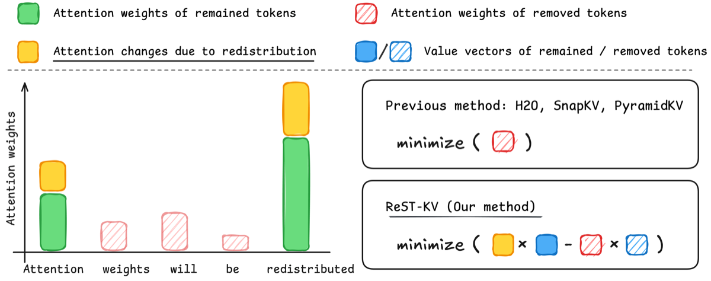

Why it matters왜 중요한가
High attention does not mean "important to keep" — because attention is reweighted the moment you evict.
attention이 크다고 "남길 가치"가 큰 게 아니다 — 빼는 순간 attention이 다시 분배되기 때문이다.
As context grows past 128K tokens, the KV cache can balloon to hundreds of GB, so eviction is the practical lever for long-context inference without retraining. The trouble: every prior indicator scores a token by its raw attention weight, treating the rest of the cache as frozen. But when you actually remove a token, the softmax renormalizes and the surviving tokens absorb its mass — a token that looked redundant may have been the only one carrying a value the others can't reconstruct. ReST-KV measures importance by what happens to the layer's output after removal, so redistribution is baked into the score rather than ignored.
컨텍스트가 128K 토큰을 넘어가면 KV 캐시는 수백 GB로 폭증하므로, 재학습 없이 롱컨텍스트 추론을 돌리려면 eviction이 사실상 유일한 레버다. 문제는 모든 기존 지표가 토큰을 원시 attention 가중치로만 평가하면서, 나머지 캐시는 고정돼 있다고 가정한다는 점. 실제로 토큰을 빼면 softmax가 재정규화되며 남은 토큰들이 그 질량을 흡수한다 — 중복처럼 보이던 토큰이 사실 다른 토큰들이 복원 못 하는 value를 유일하게 들고 있었을 수 있다. ReST-KV는 중요도를 제거 후 그 레이어의 출력이 어떻게 변하는가로 측정하므로, 재분배가 점수에 그대로 반영된다.

By the numbers핵심 숫자
(low budget, Mistral)LongBench SOTA 대비 향상
(저예산, Mistral)
(Llama3.1-8B, 4k–128k)RULER 평균 정확도 향상
(Llama3.1-8B, 4k~128k)
vs full cache + FlashAttn-2128k 디코딩 가속
vs full cache + FlashAttn-2
retained (Mistral, B=1024L)Needle-in-Haystack 점수 유지
(Mistral, B=1024L)
vs full cache128k 최대 메모리
vs full cache
over SnapKV (TTFT)SnapKV 대비 추가 프리필 오버헤드
(TTFT)
Results — RULER holds up where others collapse결과 — 다른 방법이 무너지는 RULER에서 버틴다
| Method | 4K | 16K | 64K | 128K | Avg. |
|---|---|---|---|---|---|
| Full cache | 99.34 | 98.55 | 89.85 | 79.32 | 93.46 |
| StreamingLLM | 39.81 | 12.10 | 9.91 | 8.18 | 16.50 |
| SnapKV | 83.60 | 71.12 | 57.47 | 47.99 | 67.11 |
| PyramidKV | 81.35 | 70.23 | 57.84 | 48.93 | 66.97 |
| ReST-KV | 94.01 | 84.12 | 78.65 | 68.28 | 82.27 |
| Variant변형 | Avg. Acc | Δ |
|---|---|---|
| Attention-weight Top-k (baseline)attention 가중치 Top-k (기준) | 32.98 | −2.88 |
| ReST-KV w/o LOR | 33.95 | −1.91 |
| ReST-KV w/o EMA | 34.02 | −1.84 |
| ReST-KV w/o AWS | 33.50 | −2.36 |
| ReST-KV (full) | 35.86 | — |
In one diagram한 장의 그림
Idea: eviction = preserving each layer's output아이디어: eviction = 각 레이어 출력의 보존
Layer-wise Output Reconstruction (LOR)
Define importance as the ℓ2 increase in MHA output when a KV pair is removed. Under a local-linearity assumption it simplifies to a closed form: A[n]/(1−A[n]) · ‖MHA − vₙW_O‖. The first factor is a monotonic amplifier of attention; the second is the redistribution-sensitivity term that prior indicators completely miss.
중요도를 KV 쌍 제거 시 MHA 출력의 ℓ2 증가량으로 정의. 국소 선형성 가정하에 닫힌 형태로 단순화된다: A[n]/(1−A[n]) · ‖MHA − vₙW_O‖. 앞 항은 attention의 단조 증폭기, 뒤 항은 기존 지표가 완전히 놓치는 재분배 민감도 항이다.
Spatial-Temporal Smoothing (EMA + AWS)
Importance fluctuates over decoding steps and shifts across positions (the "vertical-slash" pattern). An exponential moving average (α=0.3) stabilizes the temporal signal; an adaptive window measures how the top-B centroid drifts between the front and rear halves of the query window, then auto-tunes window size and shift (β=2000).
중요도는 디코딩 스텝에 따라 요동치고 위치에 따라 이동한다("vertical-slash" 패턴). 지수이동평균(α=0.3)이 시간 신호를 안정화하고, 적응형 윈도우가 쿼리 윈도우의 앞/뒤 절반에서 top-B 중심이 얼마나 이동하는지를 측정해 윈도우 크기·이동을 자동 조정한다(β=2000).
How it works어떻게 작동하나
- Formulate as reconstruction복원 문제로 정식화For each layer and head, frame eviction as choosing ≤B KV pairs that minimize the ℓ2 distance between the full MHA output and the pruned one.각 레이어·헤드에서, full MHA 출력과 잘라낸 출력 간 ℓ2 거리를 최소화하는 ≤B개 KV 쌍을 고르는 문제로 정식화.
- Score each KV pairKV 쌍 채점Use the closed-form indicator A[n]/(1−A[n])·‖MHA−vₙW_O‖ — large value = removing it hurts the output a lot = keep it.닫힌 형태 지표 A[n]/(1−A[n])·‖MHA−vₙW_O‖ 사용 — 값이 클수록 제거 시 출력 손상이 커 → 유지.
- Smooth over time + space시간·공간 평활화Apply EMA over a recent query window (force-keep the latest S_w tokens), then average the indicator over an adaptively sized/shifted spatial window to track moving importance.최근 쿼리 윈도우에 EMA 적용(최신 S_w 토큰은 강제 유지) 후, 적응형 크기·이동 공간 윈도우로 지표를 평균해 움직이는 중요도를 추적.
- Keep top-B, oncetop-B를 한 번만 유지Select the top-B indices per head during prefill only (no per-step re-eviction), giving SnapKV-level O(wND) prefill cost and a fixed decode budget.프리필 중 한 번만 헤드별 top-B 인덱스 선택(스텝별 재퇴출 없음) — SnapKV 수준의 O(wND) 프리필 비용과 고정 디코드 예산 확보.
What to take away그래서, 가져갈 것
Attention weight is a proxy, output error is the target. Scoring by the actual output damage from removal is a cleaner objective — and the redistribution term is the part everyone left on the table.
attention 가중치는 대리지표, 출력 오차가 진짜 목표. 제거가 출력에 주는 실제 손상으로 채점하는 게 더 깔끔한 목적함수 — 재분배 항이 모두가 놓친 부분.
The gains concentrate where it's hard. +15.2% on RULER and 68.28 at 128k (vs ~48 for SnapKV/PyramidKV) — robustness under tight budgets, not just average wins.
이득이 어려운 구간에 몰린다. RULER +15.2%, 128k에서 68.28(SnapKV/PyramidKV는 ~48) — 평균 승리가 아니라 빠듯한 예산에서의 견고함.
Nearly free at inference. The indicator only runs over a small query window, so prefill cost matches SnapKV (≈2% overhead) while decoding gets a 10.61× speedup at 128k.
추론 비용은 거의 공짜. 지표는 작은 쿼리 윈도우에서만 돌아 프리필 비용이 SnapKV와 동급(≈2% 오버헤드)이고, 128k 디코딩은 10.61× 가속.
Drop-in and composable. Model-agnostic across MHA and GQA backbones, and compatible with PyramidKV/AdaKV budget allocation and KV quantization.
끼워넣기 + 조합 가능. MHA·GQA 백본에 모두 적용되는 모델 불문 방식이며, PyramidKV/AdaKV 예산 배분 및 KV 양자화와 호환.